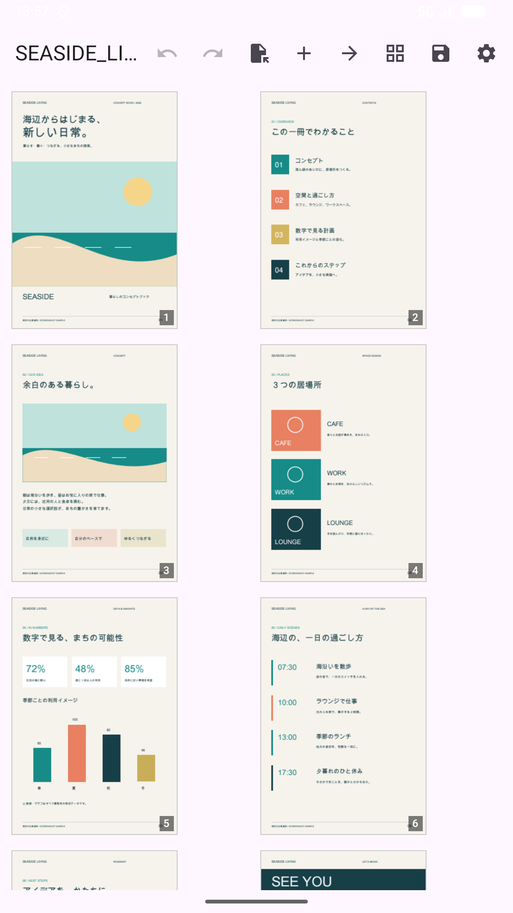
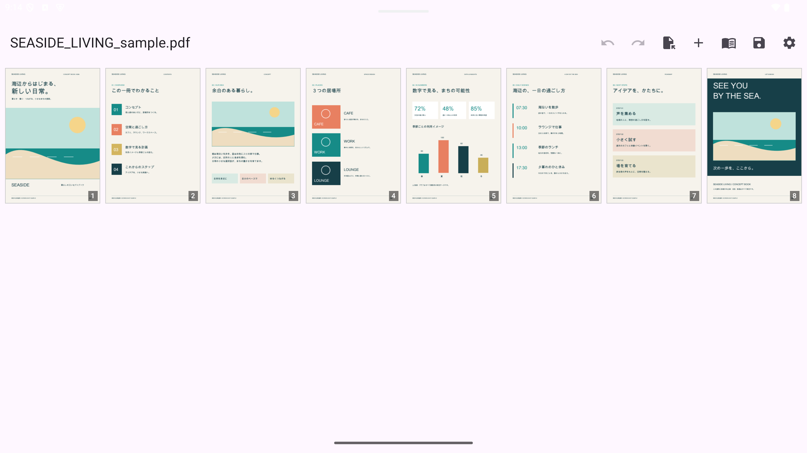
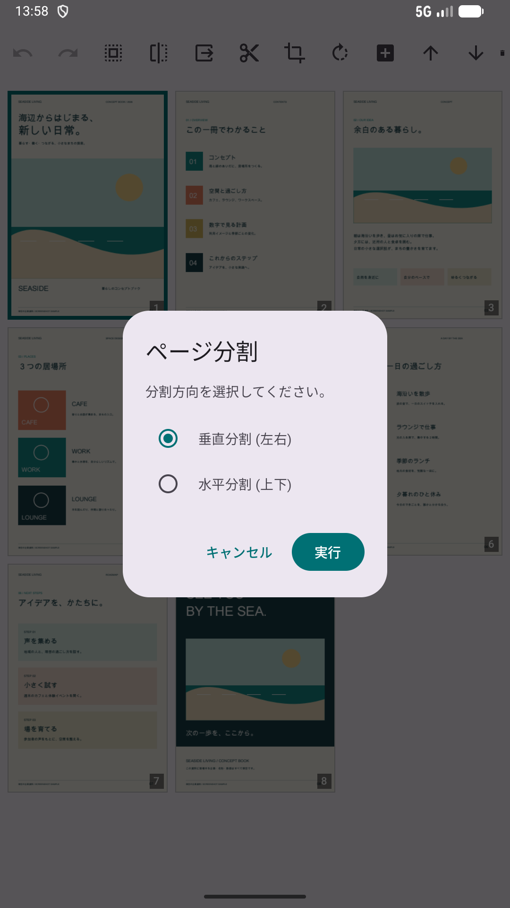
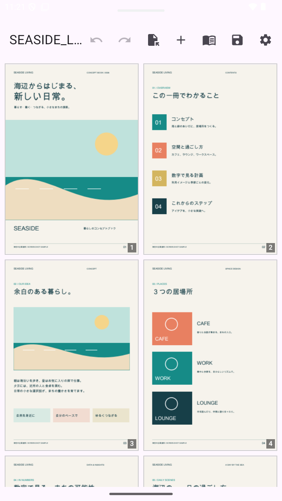
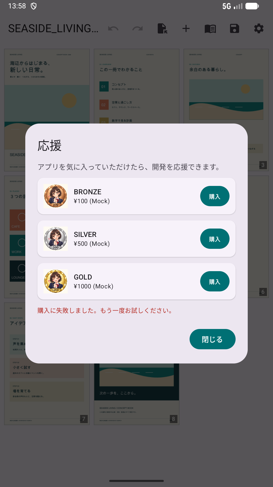
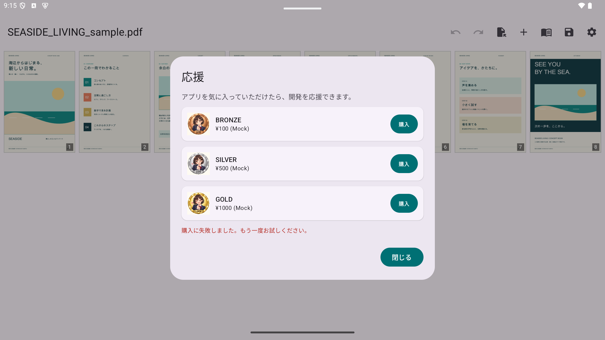
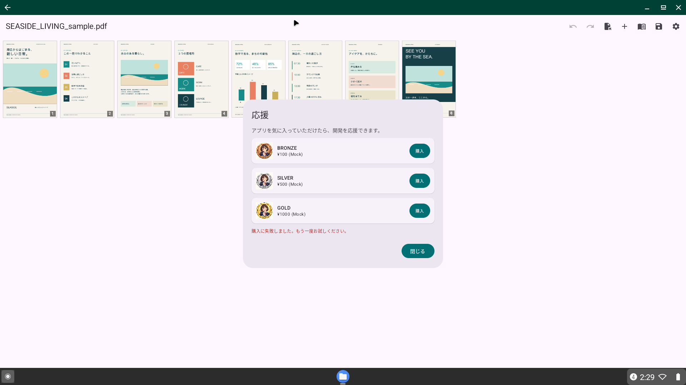

Visualização de páginas duplas, divisão e mesclagem intuitivas para Android.
Mihiraki PDF Utility é uma ferramenta completa projetada para leitores e criadores. Organize livros digitalizados, mescle documentos e reordene páginas facilmente.
Exibe duas páginas lado a lado. Suporte completo a RTL.

Divida páginas duplas em páginas individuais (vertical e horizontal).

Organize a ordem das páginas arrastando miniaturas.

Combine vários arquivos PDF em um único documento.

Funciona perfeitamente em smartphones, tablets e Chromebooks.



Download sample PDF manga to test the app: